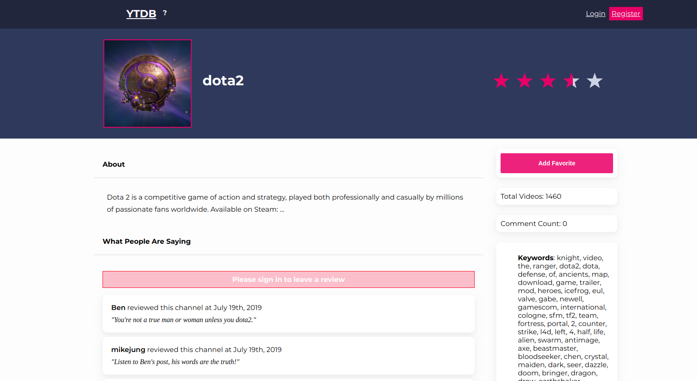

Jonathan Lassen
I'm Jonathan Lassen, a full stack developer. I've been developing
web applications on the side for years, and have enjoyed it so
much I'm now doing it full time. I will admit the constant
learning is a complete high for me. I've fallen in love with the
responsiveness and order that modern front-end JS frameworks
provide (React and Vue are the ones I know best), and am
comfortable in the back-end in a number of languages. I am excited
to continue to learn and grow on a larger team. Check out my
projects, or get in touch! Other than coding, my interests
include: traveling (I spent nearly a decade in China and am fluent
in Mandarin), exploring new foods, and busting my brain in no-luck
modern boardgames.
Selected Projects
Find a Framer
Tool for customers to find frame shops, and frame shops to market
to potential customers. React, Nodejs, Express, PostgreSql, Knex.
Mat Matcher
Innovative tool for picture framers to match mat colors across
vendors, and find the closest color match by hex color. Vue,
Mysql, Laravel.
YTDB
IMDb for youtube channels. Search our db or Youtube's db for
channels by name, topic or keyword. Rate and review them. Add your
favorite channels to your dashboard. React, Nodejs, Express,
PostgreSql, Cypress.

Bookmarks
Simple API-driven bookmarks application using jQuery / HTML / CSS.